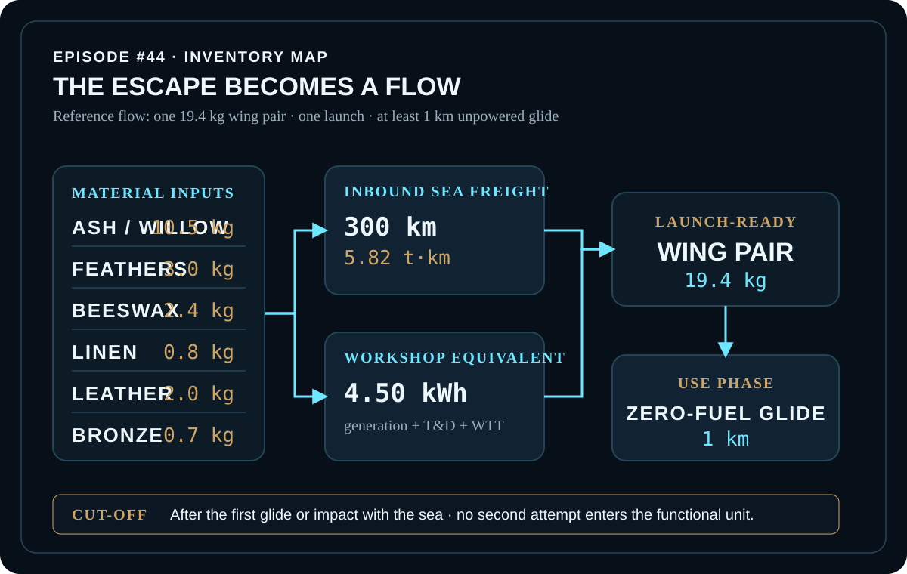
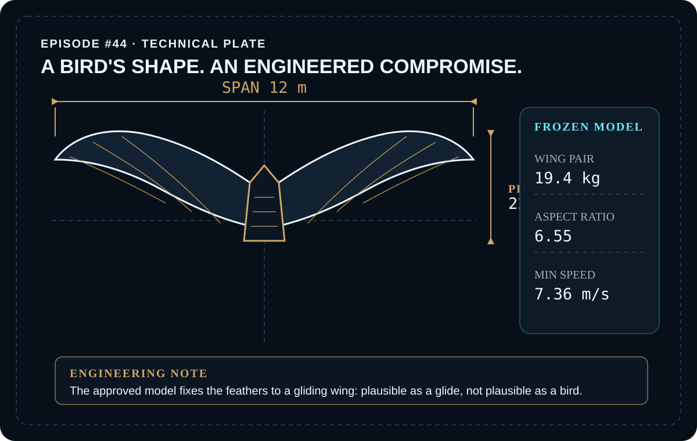
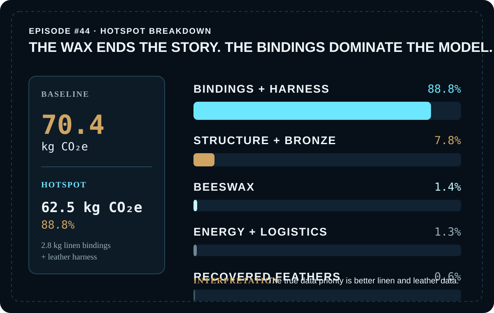

EPISODE #44 · MYTHS & LEGENDS
The Wings of Icarus
If the flight burns nothing, what actually owns the footprint of the escape?
THE SUBJECT
A bird's shape. An engineered compromise.
The approved episode reconstructs the myth as one fixed gliding wing pair rather than a flapping bird analogue. The frozen engineering model uses a 12 m span, 22 m² wing area, 19.4 kg wing-pair mass, 6.55 aspect ratio and a modeled minimum speed of 7.36 m/s.
The narrative recipe supplies feathers and wax; the reconstruction supplies the missing load-bearing structure. The model includes wing materials, inbound sea freight, a workshop-energy equivalent, electricity T&D + WTT and one zero-fuel glide. Pilot metabolism and labour, search and rescue, fatality, disposal after the fall, failed prototypes and mythic or divine agency remain outside the boundary.
Frozen geometry
12 m span, 22 m² area and 6.55 aspect ratio.
Reference flow
One 19.4 kg wing pair for a single escape attempt and at least 1 km of unpowered glide.
Main hotspot
Only 2.8 kg of linen bindings and leather harness contribute 62.5 kg CO₂e, or 88.8% of baseline.
Decision-driving proxy
The primary-clothing proxy applied to linen and leather is deliberately conservative and controls the main data-quality sensitivity.
VISUAL MODEL
The escape becomes an inventory
The public model follows material supply and sea freight into workshop assembly, then stops after the first 1 km zero-fuel glide or impact with the sea.


LIFE CYCLE INVENTORY
The myth becomes a mass balance
Activity data, factors and modelling bases reproduce the approved episode. Contributions shown here are direct arithmetic from the published quantities and factors.
| Stage | Component / activity | Activity data | Climate change | Modelling basis |
|---|---|---|---|---|
| Structure | Ash / willow frame | 10.5 kg | 2.83 kg CO₂e | Primary wood · 0.26950 kg CO₂e/kg · DEFRA 2026. |
| Wing surface | Recovered feathers | 3.0 kg | 0.457 kg CO₂e | Reuse-preparation proxy · 0.15225 kg CO₂e/kg. |
| Joints | Beeswax | 2.4 kg | 1.01 kg CO₂e | Apiculture / literature proxy · 0.42000 kg CO₂e/kg. |
| Attachment | Linen thread + lashings | 0.8 kg | 17.85 kg CO₂e | Primary-clothing proxy · 22.31000 kg CO₂e/kg. |
| Attachment | Leather harness | 2.0 kg | 44.62 kg CO₂e | Primary-clothing proxy · 22.31000 kg CO₂e/kg. |
| Fittings | Bronze fittings | 0.7 kg | 2.68 kg CO₂e | Average-metals proxy · 3.82195 kg CO₂e/kg. |
| Workshop | Workshop equivalent | 4.5 kWh | 0.830 kg CO₂e | Generation + T&D + WTT · 0.18436 kg CO₂e/kWh · DEFRA 2026. |
| Inbound logistics | Sea freight | 5.82 t·km | 0.094 kg CO₂e | 19.4 kg × 300 km · full-chain sea freight factor 0.01621 kg CO₂e/t·km · DEFRA 2026. |
| Use | Unpowered glide | 1 km | 0 kg direct fuel | One zero-fuel glide; no purchased flight fuel enters the model. |
Included
Wing materials; inbound sea freight; workshop-energy equivalent; electricity T&D + WTT; one 1 km zero-fuel glide.
Excluded
Pilot metabolism and labour; search, rescue and fatality; disposal after the fall; alternative failed prototypes; mythic or divine agency.
Cut-off
After the first glide or impact with the sea. No second attempt enters the functional unit.
Proxy disclosure
No beeswax match exists in the supplied DEFRA set. The clothing proxy applied to linen and leather is deliberately conservative and decision-driving.
HOTSPOT
The wax is not the hotspot
Bindings and harness contribute 88.8% of the 70.4 kg CO₂e baseline. The beeswax that ends the story contributes only 1.4%.

Main result
70.4 kg CO₂e
Per launch-ready wing pair.
Attachment hotspot
62.5 kg CO₂e · 88.8%
Linen bindings + leather harness dominate the baseline.
Beeswax
1.01 kg CO₂e · 1.4%
The wax ends the flight, but not the carbon story.
Energy + logistics
0.924 kg CO₂e
The use phase burns nothing; the footprint is made before take-off.
Wing-mass sensitivity
14.6 kg → 53.0 kg CO₂e (−24.7%)
19.4 kg → 70.4 kg CO₂e (baseline)
25.2 kg → 91.2 kg CO₂e (+29.6%)
All material masses and sea freight scale together; workshop electricity remains fixed.
Attachment-proxy sensitivity
0.152 kg CO₂e/kg → 8.32 kg CO₂e
22.310 kg CO₂e/kg → 70.4 kg CO₂e
29.003 kg CO₂e/kg → 89.1 kg CO₂e
Only the factor applied to 2.8 kg of linen and leather changes.
Interpretation
The width of the proxy sensitivity is a data-quality signal, not a reason to report false precision. The episode identifies better linen and leather data as the next priority.
Aerodynamics
7.36 m/s
Modeled minimum speed. The engineering reconstruction is presented as plausible as a glide, not plausible as a bird.
THE VERDICT
The sun is a distraction. The wax ends the flight; the bindings own the footprint. The model's most valuable output is the next data question.